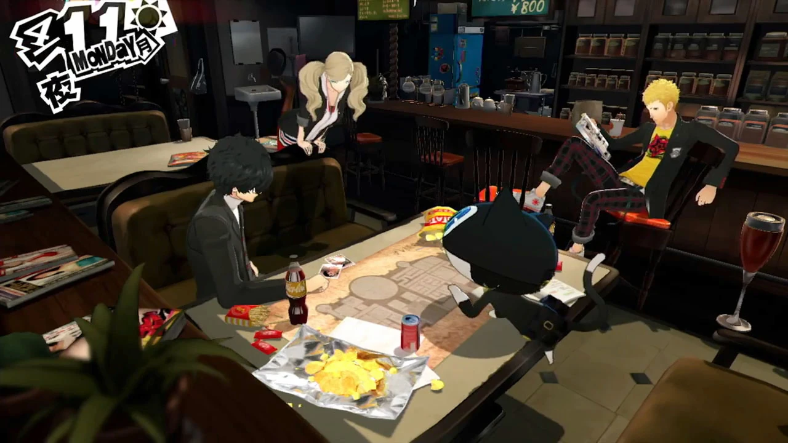
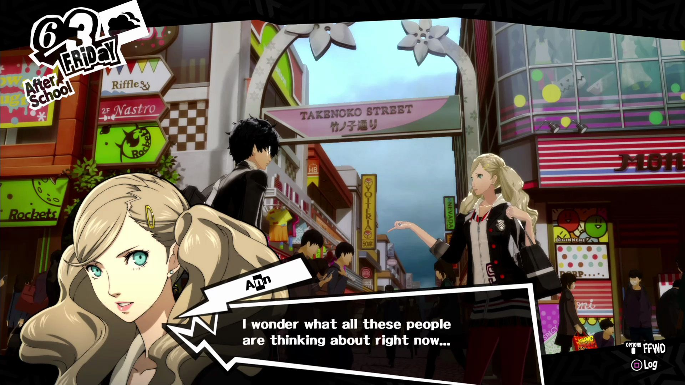
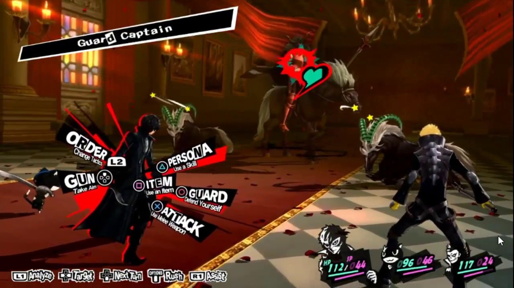
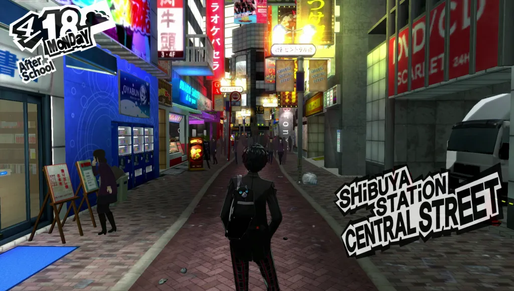

A group of high school students create a vigilante group to expose the crimes of corrupt adults but soon find themselves in the midst of a worldwide conspiracy and targeted by powerful individuals who would do anything to silence them.
Gameinformation
genre
jrpg
gamesoort
singleplayer
rating
95
uitgever
atlus
uitgavedatum
15 september 2016 in japan, 4 april wereldwijd
Images




Systeemvereisten
Besturingsysteem: 64-bitprocessor en -besturingssysteem
Persona 5 Royal allows players to experience the story they already love in a new way without losing any of the beauty from the original game. New and old characters get their chance to shine through and steal your heart, even the ones you never expected to. You’ll laugh, you’ll cry, and maybe you’ll even feel a sense of justice for the infamous Phantom Thieves in the end. But one thing you won’t feel is regret in picking up Persona 5 Royal, as it’s truly the best Persona title, if not one of the best video games, I’ve ever experienced to date.
Attack of the Fanboy
By most accounts Persona 5 didn't do much wrong. While most games that achieve the critical success of P5 would rest at that job well done, Atlus has continued to further refine their masterpiece into something even better. Persona 5 Royal is proof that even the best games can be made better by acknowledging shortcomings and addressing them, however small they are.
GameSpot
Persona 5 Royal is many things: a collection of small inspiring stories, an ambitious harrowing journey with some good friends, a stunning visual and auditory experience, a resounding call to action. By refining what was already great and building on its best qualities with a brilliant new story arc, Persona 5 Royal asserts itself as an unforgettable and empowering RPG that should be recognized as one of the best games of our time.